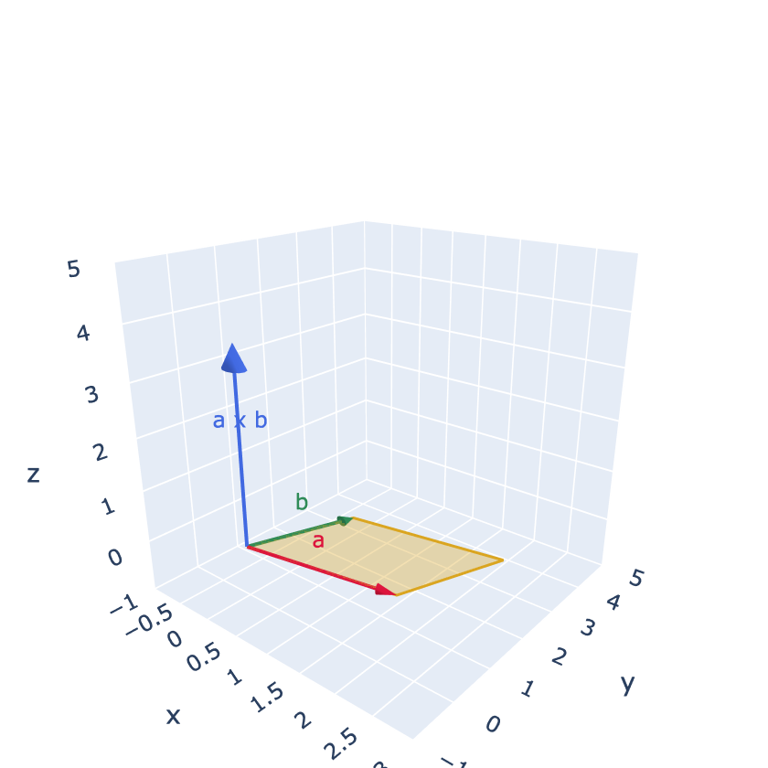
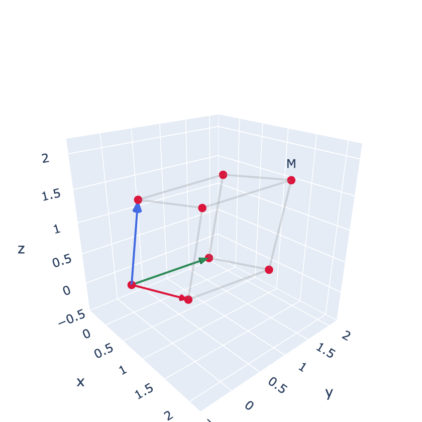
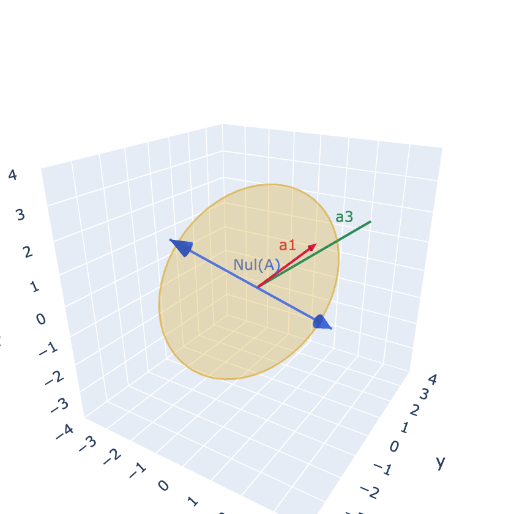

시각화 모듈 전체 소스
2장에서 만든 시각화 모듈의 전체 내용이다. 넘파이와 plotly만 사용하며, 모든 함수는 첫 인자로 캔버스(또는 캔버스의 한 칸)를 받아 그 위에 그린다. 여러 함수를 연달아 호출해 요소를 겹쳐 그릴 수 있다.
2장에서 만든 것은 평면에 필요한 아홉 개였다. 여기 실린 완성본은 거기에 3차원 캔버스, 여러 칸 배치, 그리고 선분·원·평면 같은 도형을 더한 것이다. 이 파일로 바꿔 두면 이 책의 모든 예제가 그대로 돌아간다.
함수 목록
| 함수 | 하는 일 |
|---|---|
| 2@l캔버스 | |
new_axes() | 비율이 1:1로 맞춰진 빈 2차원 좌표평면 |
new_axes3d() | 세 축의 비율이 같은 빈 3차원 좌표공간 |
new_matrix_axes() | 행렬을 색으로 볼 히트맵 캔버스 |
setCam() | 카메라의 위치·방향을 직접 지정 |
| 2@l벡터와 점 | |
draw_vector() | 화살표 하나 (2·3차원 자동 판별, origin으로 시작점 지정) |
draw_vectors() | 여러 화살표를 팔레트 색으로 |
draw_points() | 행마다 점 하나가 담긴 배열을 산점도로 |
draw_text() | 지정한 지점에 글자를 놓기 |
| 2@l도형 | |
draw_polygon() | 다각형을 색으로 채우기 (넓이·부피 시각화) |
draw_line() | 선분·반직선·직선 (kind 인자로 선택) |
draw_curve() | 점들을 이어 만든 곡선 (타원·궤적 등) |
draw_circle() | 원. 3차원에서는 normal에 수직인 평면 위의 원 |
draw_plane() | 점과 법선, 또는 세 점으로 정해지는 평면 |
| 2@l격자와 행렬 | |
draw_grid() | 격자. 행렬을 주면 변환된 격자 |
draw_matrix() | 행렬의 열이 만드는 평행사변형(\(2\times2\))·평행육면체(\(3\times3\)) |
transform() | 점들의 묶음에 행렬을 적용 |
show_matrix() | 행렬을 색과 숫자로 함께 표시 |
그 밖에 상수 PALETTE(색 목록), UNIT_SQUARE(단위 정사각형의 네 꼭짓점), UNIT_CUBE(단위 정육면체의 여덟 꼭짓점)가 정의되어 있다.
draw_vector, draw_points, draw_polygon, draw_line, draw_circle은 넘겨받은 배열의 길이를 보고 2차원인지 3차원인지 스스로 판단한다. 따라서 캔버스를 만드는 첫 줄만 new_axes()에서 new_axes3d()로 바꾸면 나머지 코드는 그대로 두어도 된다.
평면 캔버스도 속은 3차원 장면이고, \(z=0\) 평면을 위에서 내려다보도록 카메라를 고정해 둔 것뿐이기 때문이다.
여러 칸으로 나누어 비교하기
변환의 단계를 한 줄로 늘어놓는 그림이 이 책에 자주 나온다. 칸 수를 주면 된다. 돌려받은 목록의 각 칸에 그대로 그리면 되고, titles로 칸마다 제목을 붙인다.
import numpy as np
from tuvis import *
A = np.array([[1.0, 0.8],
[0.3, 1.4]])
fig, axs = new_axes(xlim=(-4, 4), ylim=(-4, 4), ncols=3,
titles=['before', 'A', 'A A'])
for ax, M in zip(axs, [np.eye(2), A, A @ A]):
draw_grid(ax, M, n=3, color='steelblue')
draw_polygon(ax, transform(M, UNIT_SQUARE))
fig.show()행렬 자체를 색으로 들여다볼 때는 히트맵 캔버스를 쓴다. show_matrix와 짝을 이룬다.
fig, axs = new_matrix_axes(ncols=2)
show_matrix(axs[0], A, title='A')
show_matrix(axs[1], A @ A, title='A A')
fig.show()전체 소스
"""tuvis.py — 『쓸모 있는 선형대수』 시각화 도구
이 책에서 독자가 import 하는 모듈은 이것 하나다.
from tuvis import *
fig, ax = new_axes(xlim=(-3, 3), ylim=(-3, 3)) # 2차원 캔버스
draw_vector(ax, [2, 1], label='v')
fig.show()
**모든 그림은 대화형이다.** 마우스로 끌면 돌아가고, 휠을 굴리면 확대된다.
2차원 그림은 z=0 평면을 위에서 내려다보는 시점으로 고정해 두었을 뿐,
속은 3차원과 같은 캔버스다. 그래서 2차원에서 쓰던 코드가 3차원에서도
그대로 동작한다. 바뀌는 것은 캔버스를 만드는 첫 줄뿐이다.
fig, ax = new_axes() # 2차원
fig, ax = new_axes3d() # 3차원
여러 칸을 나란히 놓고 비교하고 싶으면 칸 수를 준다.
fig, axs = new_axes(ncols=3, titles=['before', 'A', 'A^2'])
draw_grid(axs[0]); draw_grid(axs[1], A); draw_grid(axs[2], A @ A)
fig.show()
행렬을 색으로 들여다볼 때는 히트맵 캔버스를 쓴다.
fig, axs = new_matrix_axes(ncols=2)
show_matrix(axs[0], A, title='A')
show_matrix(axs[1], A.T, title='A.T')
fig.show()
설치: pip install plotly
이 모듈은 원래 수업용으로 만든 tuvis의 API(figure2d, draw_vec3d, draw_mat22,
draw_space_mat22 ...)를 그대로 유지한다. 기존 수업 노트북은 수정 없이 동작한다.
"""
import numpy as np
try:
import plotly.graph_objects as go
from plotly.subplots import make_subplots
except ImportError as _e: # 친절한 안내
raise ImportError(
"tuvis는 plotly가 필요하다. pip install plotly"
) from _e
PALETTE = ['crimson', 'royalblue', 'seagreen', 'darkorange',
'purple', 'teal', 'saddlebrown', 'deeppink']
UNIT_SQUARE = np.array([[0., 0.], [1., 0.], [1., 1.], [0., 1.]])
UNIT_CUBE = np.array([[x, y, z] for x in (0., 1.)
for y in (0., 1.) for z in (0., 1.)])
# ================================================================ 칸(panel)
class _Panel:
"""캔버스의 한 칸. 그리기 함수의 첫 인자로 그대로 넘기면 된다.
plotly의 Figure 는 칸이 여럿이어도 하나뿐이므로, 어느 칸에 그릴지를
기억하는 얇은 껍데기를 씌워 둔다. add_trace 를 대신 받아 row/col 을
붙여 넘기는 것이 하는 일의 전부다.
"""
def __init__(self, fig, row, col, name, index):
self.fig = fig
self.row = row
self.col = col
self.name = name # 'scene', 'scene2', ... 또는 'xy'
self.index = index # 1부터
def add_trace(self, trace, **kw):
self.fig.add_trace(trace, row=self.row, col=self.col, **kw)
return self
def set_title(self, text, **kw):
"""칸 위에 붙은 제목을 바꾼다."""
ann = self.fig.layout.annotations
if ann and self.index <= len(ann):
ann[self.index - 1].text = text
return self
def show(self, *a, **kw):
return self.fig.show(*a, **kw)
class _PanelList(list):
"""칸 목록. axs[0] 로도, axs.flat 으로도 쓸 수 있다."""
@property
def flat(self):
return iter(self)
def _scene(i):
return 'scene' if i == 1 else f'scene{i}'
def _axpair(i):
return ('x', 'y') if i == 1 else (f'x{i}', f'y{i}')
def _titles(n, titles):
"""subplot_titles 는 처음부터 자리를 잡아 두어야 나중에 바꿀 수 있다.
빈 문자열은 plotly가 자리를 만들지 않으므로 공백 하나를 넣어 둔다.
"""
if titles is None:
return [' '] * n
return [t or ' ' for t in titles] + [' '] * (n - len(titles))
# ================================================================ 캔버스
def _decorate2d(p, x, y):
"""2차원 칸에 배경·좌표축·격자를 깔아 준다."""
cx = [x[0], x[1], x[1], x[0]]
cy = [y[0], y[0], y[1], y[1]]
p.add_trace(go.Mesh3d(x=cx, y=cy, z=[0, 0, 0, 0], i=[0, 0], j=[1, 2], k=[2, 3],
color='rgba(248, 250, 255, 0.3)', opacity=1.0,
showlegend=False, hoverinfo='skip'))
for gx in range(int(np.ceil(x[0])), int(np.floor(x[1])) + 1):
p.add_trace(go.Scatter3d(x=[gx, gx], y=list(y), z=[0, 0], mode='lines',
line=dict(color='lightgray', width=1), opacity=0.6,
showlegend=False, hoverinfo='skip'))
for gy in range(int(np.ceil(y[0])), int(np.floor(y[1])) + 1):
p.add_trace(go.Scatter3d(x=list(x), y=[gy, gy], z=[0, 0], mode='lines',
line=dict(color='lightgray', width=1), opacity=0.6,
showlegend=False, hoverinfo='skip'))
for a, b in [((x[0], x[1]), (0, 0)), ((0, 0), (y[0], y[1]))]:
p.add_trace(go.Scatter3d(x=list(a), y=list(b), z=[0, 0], mode='lines',
line=dict(color='gray', width=3), opacity=0.5,
showlegend=False, hoverinfo='skip'))
def _scene_grid(kind, nrows, ncols, titles, xlim, ylim, zlim,
width, height, title, labels=('x', 'y', 'z')):
"""scene 타입 칸을 nrows x ncols 로 만든다."""
n = nrows * ncols
fig = make_subplots(rows=nrows, cols=ncols,
specs=[[{'type': 'scene'}] * ncols for _ in range(nrows)],
subplot_titles=_titles(n, titles),
horizontal_spacing=0.02, vertical_spacing=0.06)
panels = _PanelList()
for r in range(1, nrows + 1):
for c in range(1, ncols + 1):
i = (r - 1) * ncols + c
p = _Panel(fig, r, c, _scene(i), i)
panels.append(p)
if kind == '2d':
_decorate2d(p, xlim, ylim)
zspan = max(xlim[1] - xlim[0], ylim[1] - ylim[0]) * 0.01
sc = dict(xaxis=dict(range=list(xlim), title=labels[0]),
yaxis=dict(range=list(ylim), title=labels[1]),
zaxis=dict(range=[-zspan, zspan], visible=False),
aspectmode='manual',
aspectratio=dict(x=1, y=(ylim[1] - ylim[0]) /
(xlim[1] - xlim[0]), z=0.001),
camera=dict(eye=dict(x=0, y=0, z=2.0),
center=dict(x=0, y=0, z=0),
up=dict(x=0, y=1, z=0),
projection=dict(type='orthographic')))
else:
sc = dict(xaxis=dict(range=list(xlim), title=labels[0]),
yaxis=dict(range=list(ylim), title=labels[1]),
zaxis=dict(range=list(zlim), title=labels[2]),
aspectmode='cube')
fig.update_layout(**{_scene(i): sc})
fig.update_layout(title=title,
width=width or 380 * ncols + 40,
height=height or 380 * nrows + 40,
margin=dict(l=0, r=0, t=50, b=0))
return fig, panels
def new_axes(xlim=(-5, 5), ylim=(-5, 5), nrows=1, ncols=1, titles=None,
xlabel='x', ylabel='y', width=None, height=None, title='',
figsize=None, grid=True, **kw):
"""빈 2차원 캔버스를 만들어 (fig, ax)를 돌려준다.
칸이 하나면 ax 는 그 칸, 여럿이면 칸들의 목록이다.
figsize·grid 는 옛 코드와의 호환을 위해 받기만 하고 쓰지 않는다.
"""
fig, panels = _scene_grid('2d', nrows, ncols, titles, xlim, ylim, None,
width, height, title, (xlabel, ylabel, 'z'))
return fig, (panels[0] if len(panels) == 1 else panels)
def new_axes3d(xlim=(-2, 2), ylim=(-2, 2), zlim=(-2, 2), nrows=1, ncols=1,
titles=None, xlabel='x', ylabel='y', zlabel='z',
width=None, height=None, title='', figsize=None,
axes_on=True, **kw):
"""빈 3차원 캔버스를 만들어 (fig, ax)를 돌려준다."""
fig, panels = _scene_grid('3d', nrows, ncols, titles, xlim, ylim, zlim,
width, height, title, (xlabel, ylabel, zlabel))
return fig, (panels[0] if len(panels) == 1 else panels)
def new_matrix_axes(nrows=1, ncols=1, titles=None, width=None, height=None,
title=''):
"""행렬을 색으로 보여 줄 히트맵 캔버스를 만든다. show_matrix 와 짝이다."""
n = nrows * ncols
fig = make_subplots(rows=nrows, cols=ncols,
subplot_titles=_titles(n, titles),
horizontal_spacing=0.06, vertical_spacing=0.12)
panels = _PanelList()
for r in range(1, nrows + 1):
for c in range(1, ncols + 1):
i = (r - 1) * ncols + c
panels.append(_Panel(fig, r, c, 'xy', i))
xa, ya = _axpair(i)
fig.update_layout(**{
'xaxis' + xa[1:]: dict(visible=False),
'yaxis' + ya[1:]: dict(visible=False, autorange='reversed',
scaleanchor=xa),
})
fig.update_layout(title=title,
width=width or 300 * ncols + 40,
height=height or 300 * nrows + 60,
margin=dict(l=10, r=10, t=50, b=10))
return fig, (panels[0] if len(panels) == 1 else panels)
def figure2d(x=(-5, 5), y=(-5, 5), title='', width=600, height=600, **kw):
"""z=0 평면을 위에서 내려다보는 2차원 캔버스 (수업용 원래 API)."""
fig, _ = _scene_grid('2d', 1, 1, None, x, y, None, width, height, title)
return fig
def figure3d(x=(-1, 1), y=(-1, 1), z=(-1, 1), title='', width=600, height=600):
"""세 축의 비율이 같은 3차원 캔버스 (수업용 원래 API)."""
fig, _ = _scene_grid('3d', 1, 1, None, x, y, z, width, height, title)
return fig
def setCam(fig, eye, target=(0, 0, 0), up=(0, 0, 1)):
"""카메라의 위치(eye), 바라보는 지점(target), 위 방향(up)을 지정한다."""
f = fig.fig if isinstance(fig, _Panel) else fig
name = fig.name if isinstance(fig, _Panel) else 'scene'
f.update_layout(**{name: dict(camera=dict(
eye=dict(x=eye[0], y=eye[1], z=eye[2]),
center=dict(x=target[0], y=target[1], z=target[2]),
up=dict(x=up[0], y=up[1], z=up[2])))})
return fig
# ================================================================ 내부 유틸
def _dash(style):
"""'-', '--', ':' 또는 'solid', 'dashed', 'dotted'를 plotly 표기로."""
return {'-': 'solid', '--': 'dash', ':': 'dot', '-.': 'dashdot',
'solid': 'solid', 'dashed': 'dash', 'dotted': 'dot'}.get(style, 'solid')
def _to3(v):
"""2차원 벡터를 z=0을 붙여 3차원으로 만든다."""
v = np.asarray(v, dtype=float)
return np.array([v[0], v[1], 0.0]) if v.shape == (2,) else v
def _cone(tip, base, radius=0.06, n=12):
"""화살촉으로 쓸 원뿔 메시를 만든다."""
d = tip - base
L = np.linalg.norm(d)
if L < 1e-10:
return (None,) * 6
d = d / L
arb = np.array([1., 0., 0.]) if abs(d @ np.array([1., 0., 0.])) < 0.9 \
else np.array([0., 1., 0.])
p1 = np.cross(d, arb); p1 /= np.linalg.norm(p1)
p2 = np.cross(d, p1)
th = np.linspace(0, 2 * np.pi, n + 1)[:-1]
ring = np.array([base + radius * (np.cos(t) * p1 + np.sin(t) * p2) for t in th])
verts = np.vstack([ring, [tip], [base]])
i, j, k = [], [], []
for a in range(n):
b = (a + 1) % n
i += [a, a]; j += [b, b]; k += [n, n + 1]
return verts[:, 0], verts[:, 1], verts[:, 2], i, j, k
# ================================================================ 벡터
def draw_vec3d(fig, v, color='crimson', start_from=None, alpha=1.0, label=None,
cone_ratio=0.12, cone_radius=None, lineType='solid'):
"""3차원 화살표(선분 + 원뿔 화살촉)를 그린다.
cone_radius 를 주지 않으면 화살촉 크기를 화살표 길이에 맞춘다.
그래야 좌표 범위가 큰 그림에서도 촉이 보인다.
"""
v = np.asarray(v, dtype=float)
s = np.zeros(3) if start_from is None else np.asarray(start_from, dtype=float)
end = s + v
L = np.linalg.norm(v)
if L < 1e-10:
return fig
base = end - (v / L) * (L * cone_ratio)
if cone_radius is None:
cone_radius = 0.38 * L * cone_ratio
fig.add_trace(go.Scatter3d(x=[s[0], base[0]], y=[s[1], base[1]],
z=[s[2], base[2]], mode='lines',
line=dict(color=color, width=4, dash=_dash(lineType)),
opacity=alpha, showlegend=False))
if cone_radius > 0:
cx, cy, cz, ci, cj, ck = _cone(end, base, radius=cone_radius)
if cx is not None:
fig.add_trace(go.Mesh3d(x=cx, y=cy, z=cz, i=ci, j=cj, k=ck,
color=color, opacity=alpha, showlegend=False))
if label is not None:
m = s + v / 2
fig.add_trace(go.Scatter3d(x=[m[0]], y=[m[1]], z=[m[2]], mode='text',
text=[label], textfont=dict(size=12, color=color),
showlegend=False))
return fig
def draw_vec2d(fig, v, color='crimson', start_from=None, alpha=1.0, label=None,
cone_ratio=0.12, cone_radius=None, lineType='solid'):
"""z=0 평면 위에 2차원 화살표를 그린다."""
return draw_vec3d(fig, _to3(v), color=color,
start_from=None if start_from is None else _to3(start_from),
alpha=alpha, label=label, cone_ratio=cone_ratio,
cone_radius=cone_radius, lineType=lineType)
def draw_vector(fig, v, origin=None, color='crimson', label=None,
width=0.012, alpha=1.0, linestyle='-'):
"""원점(또는 지정한 시작점)에서 v 방향으로 화살표를 그린다. 2D/3D 공용."""
v = np.asarray(v, dtype=float)
return draw_vec3d(fig, _to3(v), color=color,
start_from=None if origin is None else _to3(origin),
alpha=alpha, label=label, lineType=_dash(linestyle))
def draw_vectors(fig, vs, origin=None, labels=None, alpha=1.0):
"""여러 벡터를 PALETTE 순서대로 색을 바꿔 가며 그린다."""
for i, v in enumerate(np.asarray(vs, dtype=float)):
draw_vector(fig, v, origin=origin, color=PALETTE[i % len(PALETTE)],
label=None if labels is None else labels[i], alpha=alpha)
return fig
# ================================================================ 점·도형
def draw_points(fig, P, color='darkorange', size=4, label=None, labels=None,
marker='o', s=None):
"""행마다 점 하나가 담긴 배열 P를 찍는다. 2차원은 z=0 평면 위에 놓인다."""
pts = np.array([_to3(p) for p in np.atleast_2d(np.asarray(P, dtype=float))])
size = size if s is None else max(s / 10, 2)
fig.add_trace(go.Scatter3d(
x=pts[:, 0], y=pts[:, 1], z=pts[:, 2],
mode='markers+text' if labels else 'markers',
marker=dict(size=size, color=color),
text=labels, textposition='top center', textfont=dict(size=10),
name=label or '', showlegend=False))
return fig
def draw_points_in_matrix(fig, M, color='crimson', size=4):
"""열마다 점 하나가 담긴 행렬(2xN 또는 3xN)의 점들을 찍는다."""
return draw_points(fig, np.asarray(M, dtype=float).T, color=color, size=size)
def draw_curve(fig, X, Y=None, Z=None, color='steelblue', linestyle='-',
width=3, alpha=1.0, label=None, mode='lines'):
"""이어진 곡선을 그린다.
draw_curve(ax, P) 행마다 점 하나가 담긴 배열
draw_curve(ax, xs, ys) x 좌표 목록과 y 좌표 목록
draw_curve(ax, xs, ys, zs) 3차원
"""
if Y is None:
pts = np.array([_to3(p) for p in np.asarray(X, dtype=float)])
else:
zs = np.zeros_like(np.asarray(X, dtype=float)) if Z is None \
else np.asarray(Z, dtype=float)
pts = np.column_stack([np.asarray(X, dtype=float),
np.asarray(Y, dtype=float), zs])
fig.add_trace(go.Scatter3d(x=pts[:, 0], y=pts[:, 1], z=pts[:, 2],
mode=mode,
line=dict(color=color, width=width,
dash=_dash(linestyle)),
marker=dict(size=3, color=color),
opacity=alpha, name=label or '',
showlegend=label is not None))
return fig
def draw_text(fig, p, text, color='black', size=12):
"""한 지점에 글자를 놓는다."""
q = _to3(p)
fig.add_trace(go.Scatter3d(x=[q[0]], y=[q[1]], z=[q[2]], mode='text',
text=[text], textfont=dict(size=size, color=color),
showlegend=False))
return fig
def draw_polygon(fig, P, color='goldenrod', alpha=0.35, edge=True):
"""꼭짓점 목록이 이루는 다각형을 색으로 채운다 (0번 꼭짓점 기준 부채꼴 분할)."""
pts = np.array([_to3(p) for p in np.asarray(P, dtype=float)])
n = len(pts)
if n < 3:
return fig
i = [0] * (n - 2)
j = list(range(1, n - 1))
k = list(range(2, n))
fig.add_trace(go.Mesh3d(x=pts[:, 0], y=pts[:, 1], z=pts[:, 2],
i=i, j=j, k=k, color=color, opacity=alpha,
showlegend=False))
if edge:
loop = np.vstack([pts, pts[0]])
fig.add_trace(go.Scatter3d(x=loop[:, 0], y=loop[:, 1], z=loop[:, 2],
mode='lines', line=dict(color=color, width=3),
showlegend=False))
return fig
def draw_polygons(fig, polygon_list, facecolors, alpha=0.8):
"""여러 개의 다각형을 한꺼번에 그린다 (수업용 원래 API)."""
for poly, fc in zip(polygon_list, facecolors):
draw_polygon(fig, poly, color=fc, alpha=alpha, edge=False)
return fig
def draw_line(fig, p1, p2, kind='segment', color='steelblue', alpha=0.9,
scale=3.0, label=None, linestyle='-', type=None, cone_radius=None):
"""두 점으로 정해지는 선을 그린다. kind='segment' | 'ray' | 'line'.
수업용 원래 API의 type= 인자도 그대로 받는다.
"""
kind = type or kind
a = _to3(p1); b = _to3(p2)
d = b - a
L = np.linalg.norm(d)
if L < 1e-12:
return fig
u = d / L
if kind == 'segment':
s, e = a, b
elif kind == 'ray':
s, e = a, a + d * scale
else:
mid = (a + b) / 2
s, e = mid - u * (L * scale / 2), mid + u * (L * scale / 2)
fig.add_trace(go.Scatter3d(x=[s[0], e[0]], y=[s[1], e[1]], z=[s[2], e[2]],
mode='lines',
line=dict(color=color, width=4, dash=_dash(linestyle)),
opacity=alpha, showlegend=False))
heads = []
if kind == 'ray':
heads = [(e, e - u * L * 0.1)]
elif kind == 'line':
heads = [(e, e - u * L * 0.1), (s, s + u * L * 0.1)]
for tip, base in heads:
cx, cy, cz, ci, cj, ck = _cone(
tip, base, radius=cone_radius or 0.04 * L)
if cx is not None:
fig.add_trace(go.Mesh3d(x=cx, y=cy, z=cz, i=ci, j=cj, k=ck,
color=color, opacity=alpha, showlegend=False))
if label is not None:
m = (a + b) / 2
fig.add_trace(go.Scatter3d(x=[m[0]], y=[m[1]], z=[m[2]], mode='text',
text=[label], textfont=dict(size=12, color=color),
showlegend=False))
return fig
def draw_circle(fig, center=(0, 0), radius=1.0, normal=None, color='steelblue',
alpha=0.5, fill=True, n=64, linestyle='-'):
"""원을 그린다. 3차원에서는 normal에 수직인 평면 위의 원이 된다."""
c = _to3(center)
nrm = np.asarray(normal if normal is not None else [0., 0., 1.], dtype=float)
nrm = nrm / np.linalg.norm(nrm)
arb = np.array([1., 0., 0.]) if abs(nrm @ np.array([1., 0., 0.])) < 0.9 \
else np.array([0., 1., 0.])
t1 = np.cross(nrm, arb); t1 /= np.linalg.norm(t1)
t2 = np.cross(nrm, t1)
th = np.linspace(0, 2 * np.pi, n + 1)[:-1]
ring = np.array([c + radius * (np.cos(t) * t1 + np.sin(t) * t2) for t in th])
if fill:
verts = np.vstack([c.reshape(1, 3), ring])
i = [0] * n
j = list(range(1, n + 1))
k = [(idx % n) + 1 for idx in range(1, n + 1)]
fig.add_trace(go.Mesh3d(x=verts[:, 0], y=verts[:, 1], z=verts[:, 2],
i=i, j=j, k=k, color=color, opacity=alpha,
showlegend=False))
loop = np.vstack([ring, ring[0:1]])
fig.add_trace(go.Scatter3d(x=loop[:, 0], y=loop[:, 1], z=loop[:, 2],
mode='lines',
line=dict(color=color, width=3, dash=_dash(linestyle)),
opacity=min(alpha + 0.3, 1.0), showlegend=False))
return fig
def draw_circle_3d(fig, center, normal, radius, color='steelblue', alpha=0.3,
n_segments=64, lineType='solid'):
"""수업용 원래 API — draw_circle의 인자 순서만 다른 형태."""
return draw_circle(fig, center, radius, normal=normal, color=color,
alpha=alpha, n=n_segments, linestyle=lineType)
def draw_circle_2d(fig, center=(0, 0), radius=1.0, color='steelblue', alpha=0.5,
n_segments=64, lineType='solid'):
"""z=0 평면 위의 원."""
return draw_circle(fig, center, radius, normal=[0, 0, 1], color=color,
alpha=alpha, n=n_segments, linestyle=lineType)
def draw_plane(fig, a, b, c=None, r=2.0, color='goldenrod', alpha=0.25,
show_normal=True, **kw):
"""평면을 그린다. 두 가지 방식을 모두 받는다.
draw_plane(fig, p, normal) 점 하나와 법선벡터
draw_plane(fig, p1, p2, p3) 세 점 (수업용 원래 API)
"""
if c is None: # 점 + 법선
p = np.asarray(a, dtype=float)
n = np.asarray(b, dtype=float)
else: # 세 점
p1, p2, p3 = (np.asarray(t, dtype=float) for t in (a, b, c))
p = (p1 + p2 + p3) / 3.0
n = np.cross(p2 - p1, p3 - p1)
draw_polygon(fig, np.vstack([p1, p2, p3]), color='cyan', alpha=0.6)
draw_circle(fig, p, r, normal=n, color=color, alpha=alpha)
if show_normal:
draw_vector(fig, n / np.linalg.norm(n), origin=p, color='crimson', label='n')
return fig
def draw_plane_from_normal(fig, p, n, r=3, plane_color='goldenrod',
plane_alpha=0.2, lineType='solid'):
"""수업용 원래 API — 점과 법선으로 평면을 그린다."""
return draw_plane(fig, p, n, r=r, color=plane_color, alpha=plane_alpha)
# ================================================================ 격자·행렬
def draw_grid(fig, A=None, n=4, color='steelblue', alpha=0.55, lw=1):
"""단위 격자를 그린다. 행렬 A를 주면 A로 변환된 격자를 그린다."""
A = np.eye(2) if A is None else np.asarray(A, dtype=float)
u = _to3(A[:, 0]); v = _to3(A[:, 1])
for i in range(-n, n + 1):
for base, along in ((u, v), (v, u)):
s = base * i - along * n
e = s + along * 2 * n
fig.add_trace(go.Scatter3d(x=[s[0], e[0]], y=[s[1], e[1]],
z=[s[2], e[2]], mode='lines',
line=dict(color=color, width=lw),
opacity=alpha, showlegend=False,
hoverinfo='skip'))
return fig
def draw_matrix(fig, M, label=None, alpha=0.3, ghost=True):
"""행렬의 열벡터가 만드는 평행사변형(2x2) 또는 평행육면체(3x3)를 그린다."""
M = np.asarray(M, dtype=float)
if M.shape == (2, 2):
u, v = _to3(M[:, 0]), _to3(M[:, 1])
draw_polygon(fig, np.vstack([np.zeros(3), u, u + v, v]), alpha=alpha)
draw_vec3d(fig, u, color='crimson')
draw_vec3d(fig, v, color='seagreen')
if ghost:
draw_vec3d(fig, u, color='gray', start_from=v, alpha=0.25,
cone_ratio=0, cone_radius=0)
draw_vec3d(fig, v, color='gray', start_from=u, alpha=0.25,
cone_ratio=0, cone_radius=0)
corner = u + v
elif M.shape == (3, 3):
u, v, w = M[:, 0], M[:, 1], M[:, 2]
for vec, col in zip((u, v, w), ('crimson', 'seagreen', 'royalblue')):
draw_vec3d(fig, vec, color=col)
if ghost:
for vec, org in [(u, v), (u, w), (u, v + w), (v, u), (v, w),
(v, u + w), (w, u), (w, v), (w, u + v)]:
draw_vec3d(fig, vec, color='gray', start_from=org, alpha=0.25,
cone_ratio=0, cone_radius=0)
corner = u + v + w
else:
raise ValueError('draw_matrix는 2x2 또는 3x3 행렬만 지원한다')
if label is not None:
fig.add_trace(go.Scatter3d(x=[corner[0]], y=[corner[1]], z=[corner[2]],
mode='text', text=[label],
textfont=dict(size=12), showlegend=False))
return fig
def draw_mat22(fig, M, label=None):
"""수업용 원래 API — 2x2 행렬을 평행사변형으로."""
return draw_matrix(fig, M, label=label)
def draw_mat33(fig, M, label=None):
"""수업용 원래 API — 3x3 행렬을 평행육면체로."""
return draw_matrix(fig, M, label=label)
def draw_space_mat22(fig, M, label=None, color='gray', alpha=0.2):
"""수업용 원래 API — 2x2 행렬이 만드는 변환된 격자 공간."""
draw_matrix(fig, M, label=label)
return draw_grid(fig, M, n=10, color=color, alpha=alpha)
def transform(A, P):
"""행마다 점 하나가 담긴 배열 P의 모든 점에 행렬 A를 적용한다."""
return (np.asarray(A, dtype=float) @ np.asarray(P, dtype=float).T).T
def show_matrix(ax, A, fmt='{:.2f}', cmap='RdBu_r', title=None,
xticks=None, yticks=None):
"""행렬을 색상 격자(히트맵)로 보여 준다.
ax 는 new_matrix_axes 가 돌려준 칸이다. ax=None 이면 칸을 하나 만들어
쓰고 그 캔버스를 돌려준다. xticks/yticks 를 주면 행과 열에 이름을 붙인다.
"""
A = np.asarray(A, dtype=float)
if ax is None:
fig, ax = new_matrix_axes()
lim = np.abs(A).max() or 1.0
scale = cmap[:-2] if cmap.endswith('_r') else cmap
ax.add_trace(go.Heatmap(
z=A, x=xticks, y=yticks, zmin=-lim, zmax=lim, colorscale=scale,
reversescale=cmap.endswith('_r'), showscale=False,
text=[[fmt.format(v) for v in row] for row in A] if fmt else None,
texttemplate='%{text}' if fmt else None,
textfont=dict(size=10), hoverinfo='z'))
if xticks is not None or yticks is not None: # 이름이 있으면 축을 보인다
xa, ya = _axpair(ax.index)
ax.fig.update_layout(**{
'xaxis' + xa[1:]: dict(visible=True, side='top', showgrid=False),
'yaxis' + ya[1:]: dict(visible=True, autorange='reversed',
scaleanchor=xa, showgrid=False)})
if title:
ax.set_title(title)
return ax.fig
# ================================================================ 경계 볼륨
def draw_bounding_sphere(fig, center, radius, color='royalblue', alpha=0.3):
"""경계 구(bounding sphere)를 그린다."""
c = np.asarray(center, dtype=float)
u = np.linspace(0, 2 * np.pi, 40)
v = np.linspace(0, np.pi, 20)
fig.add_trace(go.Surface(
x=c[0] + radius * np.outer(np.cos(u), np.sin(v)),
y=c[1] + radius * np.outer(np.sin(u), np.sin(v)),
z=c[2] + radius * np.outer(np.ones_like(u), np.cos(v)),
colorscale=[[0, color], [1, color]], opacity=alpha, showscale=False))
return fig
def _box_faces():
faces = [[0, 1, 2, 3], [4, 5, 6, 7], [0, 1, 5, 4],
[2, 3, 7, 6], [0, 3, 7, 4], [1, 2, 6, 5]]
i, j, k = [], [], []
for f in faces:
i += [f[0], f[0]]; j += [f[1], f[2]]; k += [f[2], f[3]]
return i, j, k
def draw_aabb(fig, min_pt, max_pt, color='seagreen', alpha=0.2):
"""축에 정렬된 경계 상자(AABB)를 그린다."""
lo = np.asarray(min_pt, dtype=float)
hi = np.asarray(max_pt, dtype=float)
V = np.array([[lo[0], lo[1], lo[2]], [hi[0], lo[1], lo[2]],
[hi[0], hi[1], lo[2]], [lo[0], hi[1], lo[2]],
[lo[0], lo[1], hi[2]], [hi[0], lo[1], hi[2]],
[hi[0], hi[1], hi[2]], [lo[0], hi[1], hi[2]]])
i, j, k = _box_faces()
fig.add_trace(go.Mesh3d(x=V[:, 0], y=V[:, 1], z=V[:, 2], i=i, j=j, k=k,
color=color, opacity=alpha, showlegend=False))
return fig
def draw_obb(fig, center, half_extents, rotation, color='darkorange', alpha=0.2):
"""방향을 가진 경계 상자(OBB)를 그린다. rotation의 열이 상자의 축이다."""
c = np.asarray(center, dtype=float)
h = np.asarray(half_extents, dtype=float)
R = np.asarray(rotation, dtype=float)
signs = np.array([[-1, -1, -1], [1, -1, -1], [1, 1, -1], [-1, 1, -1],
[-1, -1, 1], [1, -1, 1], [1, 1, 1], [-1, 1, 1]])
V = np.array([c + R @ (s * h) for s in signs])
i, j, k = _box_faces()
fig.add_trace(go.Mesh3d(x=V[:, 0], y=V[:, 1], z=V[:, 2], i=i, j=j, k=k,
color=color, opacity=alpha, showlegend=False))
for idx, col in enumerate(('crimson', 'seagreen', 'royalblue')):
draw_vec3d(fig, R[:, idx] * h[idx], color=col, start_from=c)
return fig돌려 보아야 보이는 것들
3차원 개념은 직접 돌려 보아야 이해가 빠르다. 외적이 만드는 법선의 방향, 평행육면체의 부피, 부분공간이 이루는 평면 같은 것은 한 각도에서만 보면 오해하기 쉽다. 아래 세 예제를 실행한 뒤 마우스로 끌어 보자. 지면에 실린 그림은 그중 한 각도를 저장한 것일 뿐이다.
예제 1 — 외적이 만드는 방향 (4장)
4장에서 외적 \(\vv{a}\times\vv{b}\)가 두 벡터에 수직인 벡터이고 그 크기가 평행사변형의 넓이라고 배웠다. 종이 위의 그림으로는 "정말 수직인가"를 확인하기 어렵지만, 돌려 보면 한눈에 들어온다.
import numpy as np
from tuvis import new_axes3d, draw_vector, draw_polygon
a = np.array([2.0, 0.5, 0.0])
b = np.array([0.5, 2.0, 0.0])
n = np.cross(a, b) # 두 벡터에 수직인 방향
fig, ax = new_axes3d(xlim=(-1, 3), ylim=(-1, 5), zlim=(-1, 5))
draw_polygon(ax, np.array([np.zeros(3), a, a + b, b]), alpha=0.35)
draw_vector(ax, a, color='crimson', label='a')
draw_vector(ax, b, color='seagreen', label='b')
draw_vector(ax, n, color='royalblue', label='a x b')
fig.show()
예제 2 — 행렬식은 평행육면체의 부피 (7장)
7장에서 \(3\times3\) 행렬의 행렬식이 세 열벡터가 만드는 평행육면체의 부피라고 했다. draw_matrix는 그 육면체를 그려 준다. 단위 정육면체의 여덟 꼭짓점이 어디로 옮겨 갔는지도 함께 찍어 두면 변환의 모습이 분명해진다.
import numpy as np
from tuvis import (new_axes3d, draw_matrix, draw_points,
transform, UNIT_CUBE)
M = np.array([[1.0, 0.4, 0.2],
[0.3, 1.2, 0.1],
[0.1, 0.2, 1.4]])
fig, ax = new_axes3d(xlim=(-0.5, 2.2), ylim=(-0.5, 2.2), zlim=(-0.5, 2.2))
draw_matrix(ax, M, label='M') # 평행육면체
draw_points(ax, transform(M, UNIT_CUBE), color='crimson', size=3)
fig.show()
print('부피 =', abs(np.linalg.det(M)))
예제 3 — 열공간과 영공간 (8장)
8장에서 배운 두 부분공간은 3차원에서 특히 잘 보인다. 랭크가 2인 행렬은 3차원 공간을 평면으로 눌러 버리며(열공간), 그 과정에서 원점으로 사라지는 직선이 생긴다(영공간). 두 공간이 서로 다른 대상이라는 점이 그림에서 분명해진다.
import numpy as np
from tuvis import new_axes3d, draw_vector, draw_line, draw_plane
A = np.array([[1.0, 2.0, 3.0],
[2.0, 4.0, 6.0],
[1.0, 1.0, 2.0]]) # 랭크 2
fig, ax = new_axes3d(xlim=(-4, 4), ylim=(-4, 4), zlim=(-4, 4))
n = np.cross(A[:, 0], A[:, 2]) # 열공간(평면)의 법선
draw_plane(ax, [0, 0, 0], n, r=3.2, alpha=0.3, show_normal=False)
draw_vector(ax, A[:, 0], color='crimson', label='a1')
draw_vector(ax, A[:, 2], color='seagreen', label='a3')
v = np.array([1.0, 1.0, -1.0]) # A v = 0
draw_line(ax, -1.8 * v, 1.8 * v, kind='line', color='royalblue',
scale=1.0, label='Nul(A)')
fig.show()
print('rank :', np.linalg.matrix_rank(A))
print('A @ v :', A @ v)
이 세 그림은 make_tuvis_figures.py로 저장한 것이다. 특히 예제 3은 시선을 평면과 나란히 맞추면 "3차원이 평면으로 눌린다"는 말이 무슨 뜻인지 즉시 이해된다.
대화형 그림을 보고서나 인쇄물에 담으려면 정지 화면이 필요하다.
fig.write_image('figure.png', scale=2) # pip install kaleido 가 한 번 필요각도를 코드로 지정하려면 setCam(ax, eye, target, up)으로 카메라를 직접 놓는다. eye가 카메라의 위치, target이 바라보는 지점이다.
이 모듈에는 이 책이 다루지 않는 기능도 들어 있다. 경계 구(draw_bounding_sphere), 축 정렬 경계 상자(draw_aabb), 방향 경계 상자(draw_obb)는 컴퓨터 그래픽스의 충돌 검사에 쓰이는 도형들로, 13장의 내용을 더 깊이 파고들 때 유용하다.
확장해 보기
이 모듈은 최소한의 기능만 담고 있다. 학습이 진행되면서 다음과 같은 함수를 직접 추가해 보면 좋다.
draw_ellipse(ax, A)— 행렬 \(\mm{A}\)가 단위원을 보내는 타원을 그린다 (11장)draw_eigen(ax, A)— 고유벡터를 고유값 크기만큼의 화살표로 그린다 (9장)draw_span(ax, vs)— 주어진 벡터들이 생성하는 직선이나 평면을 표시한다 (8장)animate_transform(A, steps)— 항등변환에서 \(\mm{A}\)까지 서서히 변해 가는 여러 장의 그림을 만든다
마지막 항목은 특히 유용하다. \(\mm{M}(t) = (1-t)\Id + t\mm{A}\)로 중간 단계를 만들면 변환이 일어나는 과정을 연속적으로 볼 수 있다.
import numpy as np
from tuvis import *
def animate_transform(A, shape, steps=5):
# 항등변환에서 A까지 서서히 변해 가는 모습을 한 줄로 늘어놓는다
fig, axs = new_axes(xlim=(-3, 3), ylim=(-3, 3), ncols=steps)
for k, ax in enumerate(axs):
t = k / (steps - 1)
M = (1 - t) * np.eye(2) + t * np.asarray(A, float)
draw_grid(ax, M, n=2, color='lightsteelblue')
draw_polygon(ax, transform(M, shape), color='crimson', alpha=0.5)
ax.set_title(f't = {t:.2f}')
return fig
fig = animate_transform([[0., -1.], [1., 0.]], UNIT_SQUARE)
fig.show()